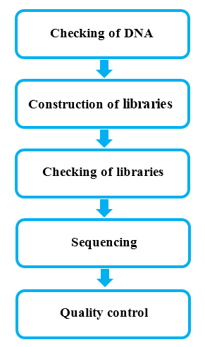
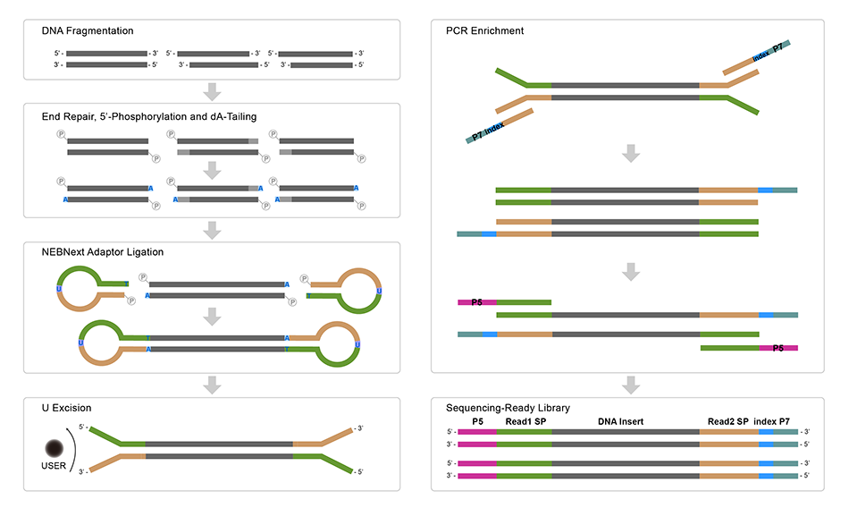

From the DNA samples to the final data, each step, including sample test, library preparation, and sequencing, influences the quality of the data, and data quality directly impacts the analysis results. To guarantee the reliability of the data, quality control (QC) is performed at each step of the procedure. The workflow is as follows:

There are two main methods of QC for DNA samples:
(1) Agarose Gel Electrophoresis: tests DNA degradation and potential contamination.
(2) Qubit 2.0: quantifies the DNA concentration precisely.
A total amount of 1.0μg DNA per sample was used as input material for the DNA sample preparations. Sequencing libraries were generated using NEBNext® DNA Library Prep Kit following manufacturer's recommendations and indices were added to each sample. The genomic DNA is randomly fragmented to a size of 350bp by shearing, then DNA fragments were end polished, A-tailed, and ligated with the NEBNext adapter for Illumina sequencing, and further PCR enriched by P5 and indexed P7 oligos. The PCR products were purified (AMPure XP system) and resulted libraries were analyzed for size distribution by Agilent 2100 Bioanalyzer and quantified using real-time PCR.

The qualified libraries are fed into Illumina sequencers after pooling according to its effective concentration and expected data volume.
The “e” represents the sequence error rate and Qphred represents the base quality value,Qphred=-10log10(e). The relationship between sequencing error rate (e) and sequencing base quality value (Qphred) is as below:
| Phred score | error base | right base | Q-score |
|---|---|---|---|
| 10 | 1/10 | 90% | Q10 |
| 20 | 1/100 | 99% | Q20 |
| 30 | 1/1000 | 99.9% | Q30 |
| 40 | 1/10000 | 99.99% | Q40 |
The distribution of quality score is shown in Fig.1:
Fig.1 Distribution of Sequencing Quality
The base position is on the horizontal axis and the sequencing quality is on the vertical axis
The first half part of the distribution is for reads1 and the latter half part is for reads2
For Illumina SBS technology, the distribution of sequencing error rate has two features:
(1) Error rate grows with sequenced reads extension because of the consumption of sequencing reagent. The phenomenon is common in the Illumina high-throughput sequencing platform (Erlich Y. et al. 2008; Jiang et al. 2011).
(2) The first several bases have higher sequencing error rate than others. At the beginning of sequencing, the focusing of the sequencer's fluorescence image sensor sensing element is not sensitive enough, thus, the quality of acquired fluorescence image is low.
Generally, single base error rate should be lower than 1%. The error rate of this project is shown in Fig.2:
Fig.2 Error Rate Distribution
The base position is on the horizontal axis and the single base error rate is on the vertical axis
The first half part of the distribution is for reads1 and the latter half part is for reads2
It is used to identify the separation situation of AT and GC by checking the distribution of GC content. According to the principle of complementary bases, the content of AT and GC should be equal at each sequencing cycle and be constant and stable in the whole sequencing procedure. But in practical measurement, due to the primer amplification bias and some other reasons, the first 6 to 7 nucleotides will fluctuate which is normal and reasonable.
The distribution of GC content is shown in Fig.3:
Fig.3 A/T/G/C Distribution
The base position is on the horizontal axis and the single base percentage is on the vertical axis
The first half part of the distribution is for reads1 and the latter half part is for reads2
The sequenced reads (raw reads) often contain low quality reads and adapters, which will affect the analysis quality. So it's necessary to filter the raw reads and get the clean reads. The filtering process is as follows:
(1) Remove reads containing adapters.
(2) Remove reads containing N > 10% (N represents the base cannot be determined).
(3) Remove reads containing low quality (Qscore<= 5) base which is over 50% of the total base.
Adapter sequences :
5' Adapter ：
5'-AATGATACGGCGACCACCGAGATCTACACTCTTTCCCTACACGACGCTCTTCCGATCT-3'
3' Adapter(The underlined 6bp bases is Index)：
5'-GATCGGAAGAGCACACGTCTGAACTCCAGTCACATCACGATCTCGTATGCCGTCTTCTGCTTG-3'
The Sequencing data filtration of this project can be seen in Fig.4 :
Fig.4 Composition of Raw Data
The total output of data on the sequencer: Raw data 92.6 G.
The detail statistics for the quality of sequencing data are shown in Table 1.
Table 1 Data Quality Summary
| Sample | Library | Flowcell/Lane | Raw reads | Raw data(G) | Effective(%) | Error(%) | Q20(%) | Q30(%) | GC(%) |
|---|---|---|---|---|---|---|---|---|---|
| P_cali_g | USD16092980L | HKG7CDSXX_L1 | 308674338 | 92.6 | 99.81 | 0.03 | 95.87 | 90.70 | 38.04 |
Sample: sample name
Raw reads: four rows are taken as a unit to calculate the total amount of read1 and read2 in raw data files
Raw bases: (total raw reads) * (sequence length), calculating in G
Error rate: base error rate
Q20, Q30: (Base count of Phred value > 20 or 30) / (Total base count)
GC content: (G & C base count) / (Total base count)
The original data obtained from the high throughput sequencing platforms are transformed to sequenced reads by base calling. Raw data are recorded in a FASTQ file which contains sequenced reads and corresponding sequencing quality information. Every read in FASTQ format is stored in four lines as follows (Cock P.J.A. et al. 2010):
@HWI-ST1276:71:C1162ACXX:1:1101:1208:2458 1:N:0:CGATGT
NAAGAACACGTTCGGTCACCTCAGCACACTTGTGAATGTCATGGGATCCAT
+
#55???BBBBB?BA@DEEFFCFFHHFFCFFHHHHHHHFAE0ECFFD/AEHH
Line 1 begins with a '@' character and is followed by a sequence identifier and an optional description (such as a FASTA title line).
Line 2 is the sequence of the read.
Line 3 begins with a '+' character and is optionally followed by the same sequence identifier (and any description) again.
Line 4 encodes the quality values for the bases in Line 2.
The details of Illumina sequence identifier are as follows:
| Identifier | Meaning |
|---|---|
| HWI-ST1276 | Instrument – unique identifier of the sequencer |
| 71 | run number – Run number on instrument |
| C1162ACXX | FlowCell ID – ID of flowcell |
| 1 | LaneNumber – positive integer |
| 1101 | TileNumber – positive integer |
| 1208 | X – x coordinate of the spot. Integer which can be negative |
| 2458 | Y – y coordinate of the spot. Integer which can be negative |
| 1 | ReadNumber - 1 for single reads; 1 or 2 for paired ends |
| N | whether it is filtered - NB: Y if the read is filtered out, not in the delivered fastq file, N otherwise |
| 0 | control number - 0 when none of the control bits are on, otherwise it is an even number |
| CGATGT | Illumina index sequences |
(1) The data deliverd is a compressed file in format of '.fq.gz'. Before data delivery, we will calculate the md5 value of each compressed file and
please check it when you get the data. There are two ways to check the md5 value. In Linux environment, you can use 'md5sum -c <*md5.txt>' command under the data directory. In Windows environment, you can use
a calibration tool e.g. hashmyfiles. If the md5 value of compressed file doesn't match with the one we provide in md5 file in data directory, the file may have been damaged during the transmitting procedure.
(2) For paired-end (PE) sequencing, every sample should have 2 data flies (read1 file and read2 file). These 2 files have the same line number, you could use 'wc -l' command to check the line number in Linux environment.
The line number divide by 4 is the number of reads.
(3) The date size is the space occupied by the data in the hard disk. It's related to the format of disk and compression ratio. And it has no influence on the quantity of sequenced bases.
So the size of read1 file may be unequal to the size of read2 file.
(4) When customer’s samples need large amount of data e.g. whole genome sequencing data, we would use separate-lane sequencing strategy to make sure the quality of data. So it's possible that one sample has several parts sequencing data.
For example, if sample 1 has two read1 files, sample1_L1_1.fq.gz and sample1_L2_1.fq.gz, that means this sample was sequenced on different lanes.
(5) About the sequenced reads. The Index is normally in the middle of the adapter during the process of experimenting and sequencing except the special library. We can get the Read1 sequence and Read2 sequence by Index read.
They are all the sequence of samples so that it's no necessary to dispose the beginning and end of reads in the downstream analysis(e.g. mapping).
(6) Ninety days after the data delivery, we will delete outdated data. So please keep your data properly. If you have any question or doubt, please contact us as soon as possible. Have a nice day!
Cock P.J.A. et al (2010). The Sanger FASTQ file format for sequences with quality scores, and the Solexa/Illumina FASTQ variants. Nucleic acids research 38, 1767-1771.
Hansen K.D. et al (2010). Biases in Illumina transcriptome sequencing caused by random hexamer priming. Nucleic acids research 38, e131-e131.
Erlich Y.et al (2008). Alta-Cyclic: a self-optimizing base caller for next-generation sequencing.Nature Methods,5,679-682.
Jiang L.C. et al (2011). Synthetic spike-in standards for RNA-seq experiments. Genome research 21, 1543-1551.
Yan L.Y. et al (2013). Single-cell RNA-Seq profiling of human preimplantation embryos and embryonic stem cells. Nat Struct Mol Biol.
{kind=link}
{kind=link}
{kind=link}
{kind=link}